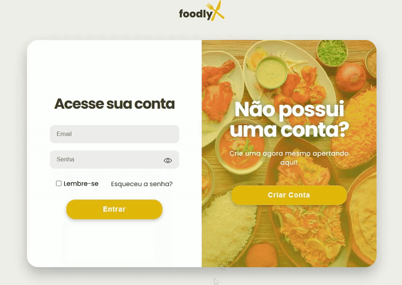

Registro e Login
A implementação do sistema de registro e login foi tratada como um dos pilares centrais do Foodly, sendo a funcionalidade que permite a existência de múltiplas contas e a personalização da experiência em uma rede social. Todo o fluxo está diretamente integrado a um banco de dados MySQL, garantindo que as credenciais sejam processadas e validadas em tempo real com total precisão. O sistema opera sem falhas, contando com travas de segurança que impedem a duplicidade de e-mails e exibem alertas imediatos caso o usuário ou a senha informados estejam incorretos no momento do acesso. Além disso, incluí um recurso de visualização da senha para melhorar a usabilidade durante o preenchimento, evitando erros operacionais. Embora o núcleo de autenticação esteja robusto e funcional, etapas futuras do projeto preveem a adição de recursos complementares, como a funcionalidade de "lembrar-se" do usuário e o fluxo de recuperação de senha, que ainda não foram integrados nesta versão.
